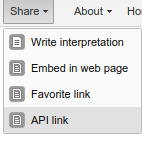

After you have created a pivot table and saved it as a favorite, you can share the pivot table in different ways.
Click Favorites > Share.
The Sharing settings dialog window opens.
Click Favorites > Share to reach the menu presented in the screen shot below.
|  |
Write interpretation: Allows you to create an interpretation of the pivot table and share it with all users of the system.
For certain analysis-related resources in DHIS, like pivot tables, charts and maps, one can share a data interpretation. An interpretation is simply a link to the relevant resource together with a text expressing some insight about the data. If you want to share a pivot table interpretation you need to first save the table you want to share as a favorite. Then, without making any changes to the table, click the "Share" button the toolbar. A window will open up and this is where you write your interpretation. When you are done, click share button in the bottom right corner of the window. The window will close automatically and if the interpretation was shared successfully you will find a notification on the bottom toolbar.
Embed in web page: This option will generate a HTML fragment which can be used to display the pivot table in an external web page.
Certain analysis-related resources in DHIS, like pivot tables, charts and maps, can be embedded in any web page by using a plugin. If you have created a table in the Pivot Table app you will get the plug-in configuration for this table by clicking the "Share" button the tool bar and then "Embed as webpage". You will find more information about the plugins in the web api chapter.
Favorite link: Provides a URL for the favorite. This can then be easily shared with other users or colleagues via email or chat.
API Link:Provides a URL of the API resource. By default this is a HTML resource, but by modifying the suffix of ".html" to ".json" or ".csv", other data types are available. This option is most useful when you need an API link to the pivot table resource. Consult the DHIS2 developers guide for details about the different types which are available.